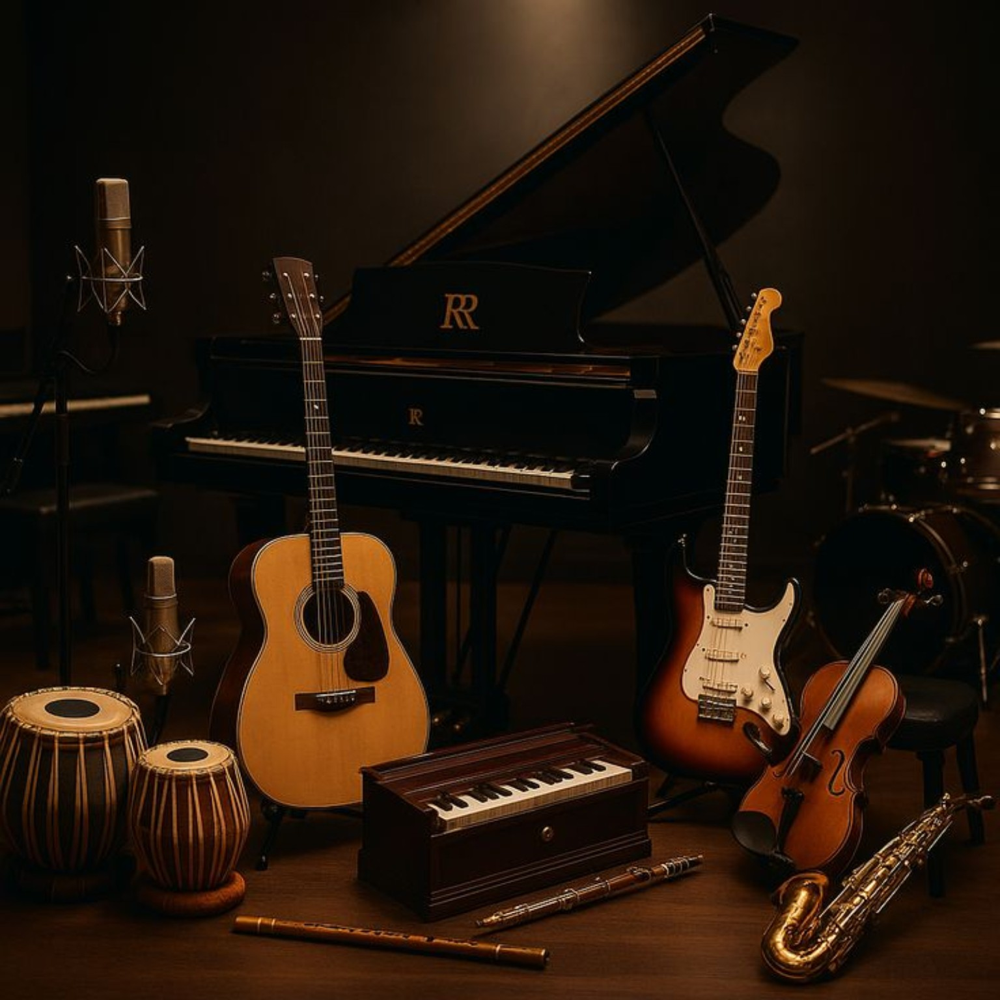
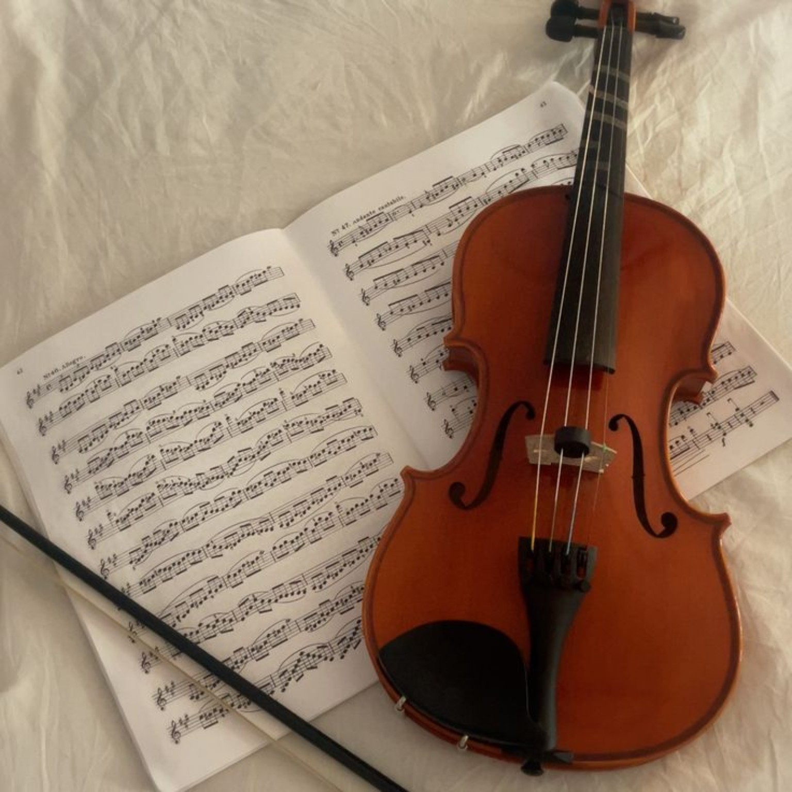
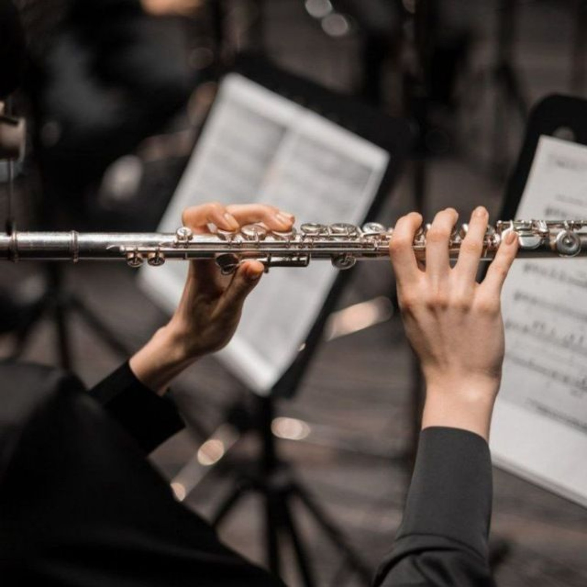
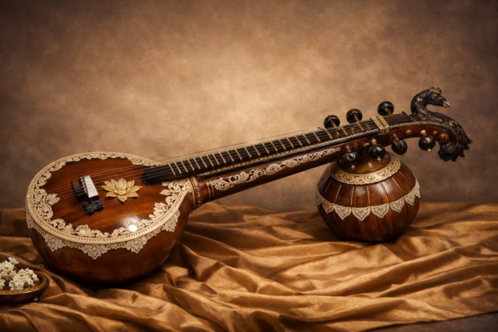
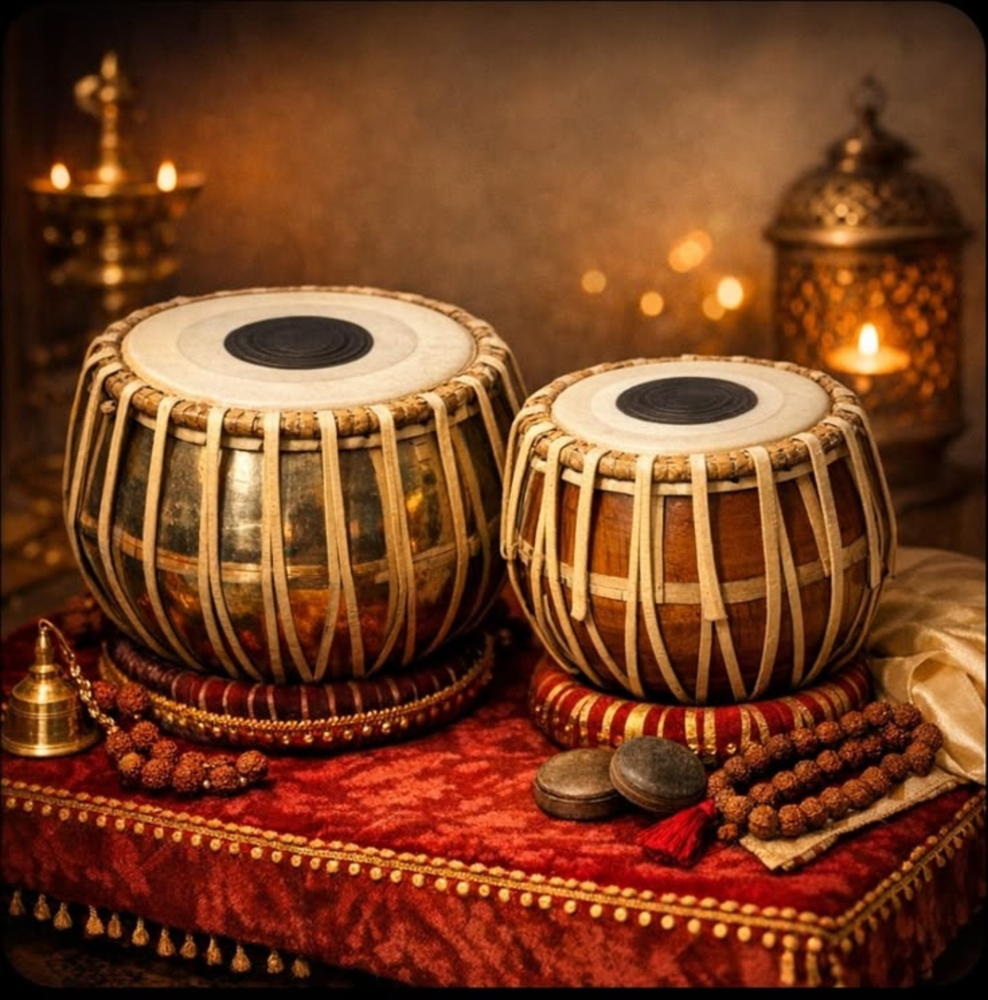
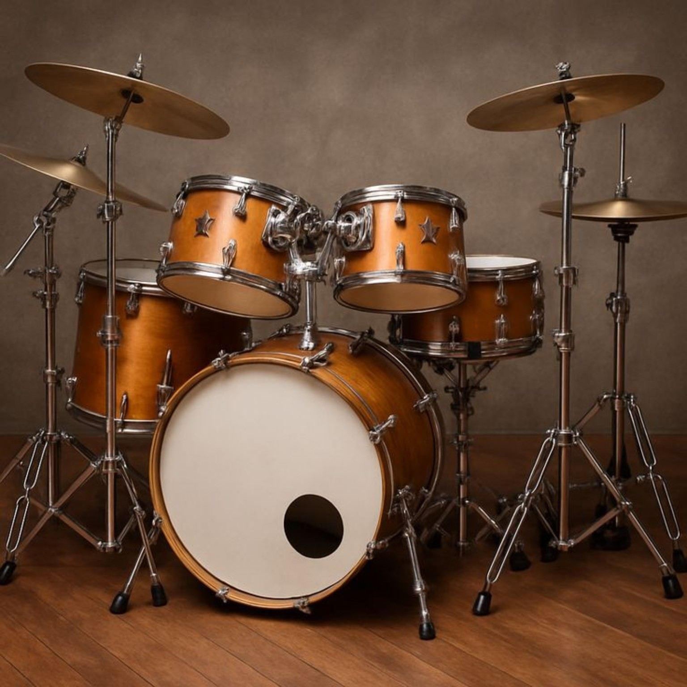

Strings
Guitar
Chords, rhythm, fingerstyle and songs.
Eight focused courses cover instruments, vocals and rhythm—from first lessons to confident performance.

Chords, rhythm, fingerstyle and songs.

Notation, technique, accompaniment and repertoire.

Bow control, intonation, rhythm and expression.

Breath support, tone, fingering and repertoire.
Voice culture and Indian classical foundations.

Traditional technique and raga-based learning.

Bols, tala, accompaniment and rhythm practice.

Coordination, grooves, fills and performance.